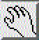

|  |
View Mode and PickMode are the two fundamental interaction modes of the mouse in the Renderer.
Note:
You can also switch between pick mode
and view mode via
|
View Mode
| You can 'show point of rotation axes' using the corresponding option of the PreferenceSheet. |
| 'spin animation' must be enabled in the PreferenceSheet! |
| Similar to the mouse operations in view mode you can change the view of the object(s) in the viewer area by three thumb wheels. For related tools see also Manipulators and the Transform Editor (see ObjectTransform) |